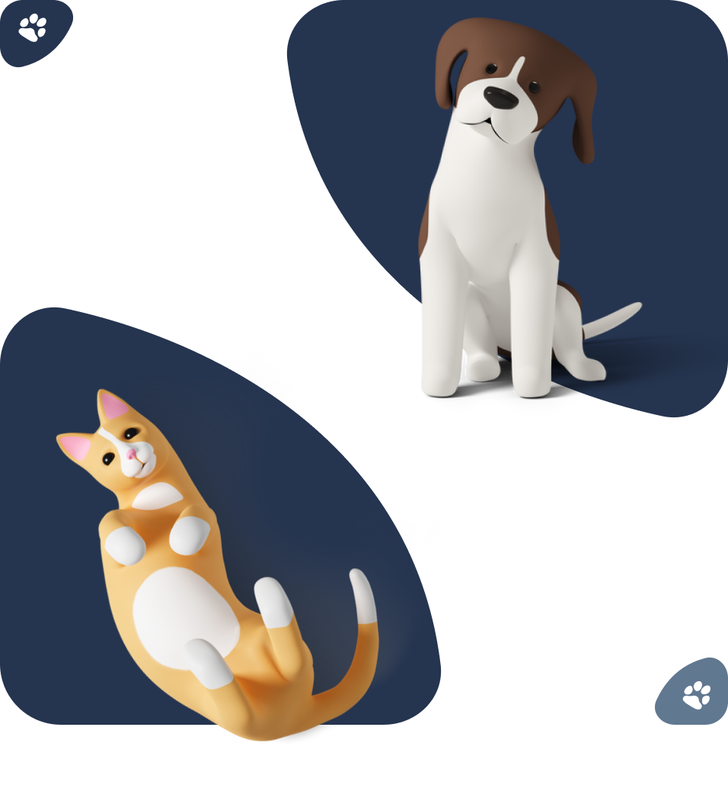
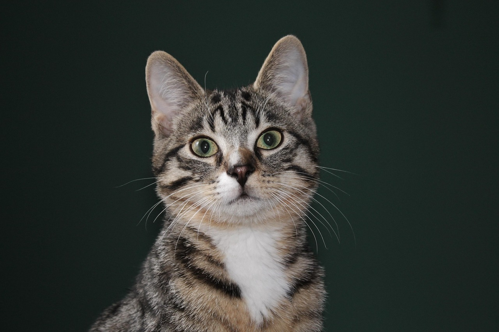
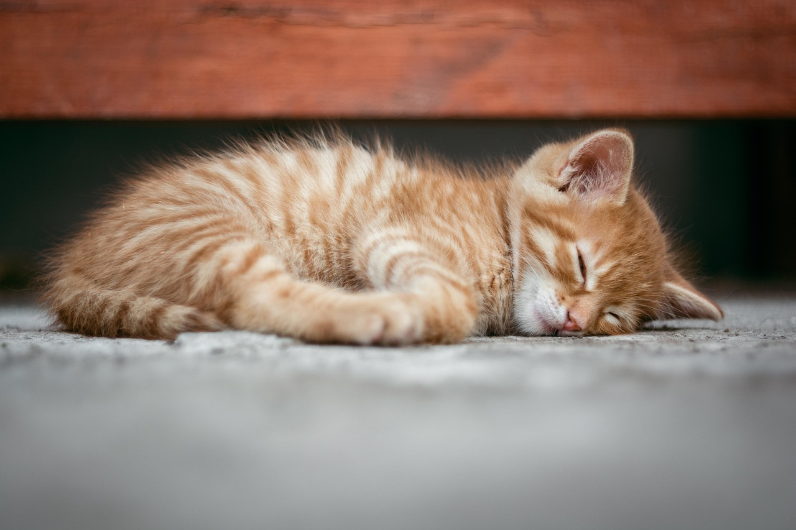
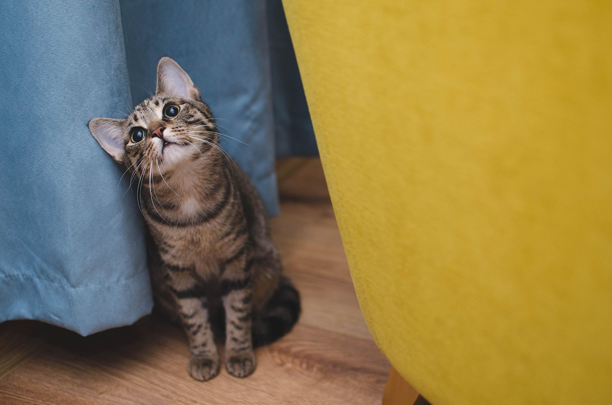
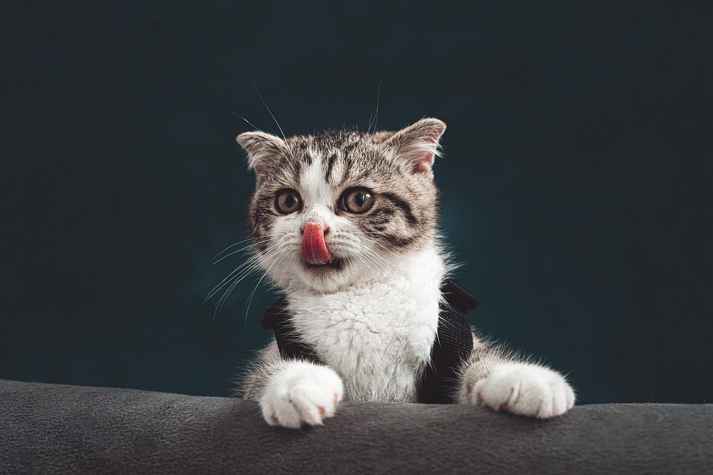

Animales en busca de un hogar
Cada una de estas historias merece un final feliz. Conoce a los peluditos que actualmente están bajo nuestro cuidado y que están listos para encontrar una familia responsable y amorosa.

Nuestras Mascotas en Adopción

Whiskers
Edad: 2 años
Tamaño: Mediano
Raza: Persa
Whiskers es un gato cariñoso y juguetón que busca un hogar amoroso.

Mia
Edad: 1 año
Tamaño: Pequeño
Raza: Siamés
Mia es una gata energética y sociable que ama jugar con pelotas.

Shadow
Edad: 3 años
Tamaño: Grande
Raza: Maine Coon
Shadow es un gato tranquilo y leal, perfecto para familias.

Luna
Edad: 1.5 años
Tamaño: Mediano
Raza: Bengalí
Luna es una gata activa y curiosa, ideal para hogares dinámicos.

Tiger
Edad: 4 años
Tamaño: Grande
Raza: Ragdoll
Tiger es un gato relajado y afectuoso, perfecto para familias con niños.

Simba
Edad: 2.5 años
Tamaño: Mediano
Raza: Abisinio
Simba es un gato inteligente y juguetón, amante de la exploración.

Nala
Edad: 3.5 años
Tamaño: Pequeño
Raza: Scottish Fold
Nala es una gata dulce y cariñosa, ideal para personas mayores.

Oliver
Edad: 1 año
Tamaño: Pequeño
Raza: British Shorthair
Oliver es un gatito juguetón y sociable, perfecto para familias jóvenes.

Chloe
Edad: 2 años
Tamaño: Mediano
Raza: Sphynx
Chloe es una gata sin pelo, cariñosa y llena de energía.
Whiskers
Edad: 2 años | Sexo: Macho | Tamaño: Mediano
Raza: Persa | Estado: En adopción
Historia
Whiskers fue encontrado abandonado en una calle lluviosa. Después de ser rescatado, ha mostrado una personalidad cariñosa y juguetona, adaptándose rápidamente a la vida en el refugio.
Salud
Completamente vacunado, desparasitado y esterilizado. Salud excelente, sin problemas médicos conocidos.
Comportamiento
Muy sociable con humanos y otros animales. Le encanta jugar con juguetes y recibir caricias. Ideal para familias con niños o parejas.
Mia
Edad: 1 año | Sexo: Hembra | Tamaño: Pequeño
Raza: Siamés | Estado: En adopción
Historia
Mia fue encontrada sola en un parque. Es una gata energética que ha encontrado en el refugio un lugar seguro para expresarse.
Salud
Vacunada y desparasitada. Salud óptima, lista para un hogar amoroso.
Comportamiento
Sociable y juguetona, le encanta interactuar con personas y otros gatos. Perfecta para familias activas.
Shadow
Edad: 3 años | Sexo: Macho | Tamaño: Grande
Raza: Maine Coon | Estado: En adopción
Historia
Shadow llegó al refugio después de ser abandonado. Su personalidad tranquila lo hace un compañero ideal.
Salud
Esterilizado, vacunado y en excelente condición. Sin problemas de salud.
Comportamiento
Leal y afectuoso, se lleva bien con niños y otros animales. Prefiere ambientes calmados.
Luna
Edad: 1.5 años | Sexo: Hembra | Tamaño: Mediano
Raza: Bengalí | Estado: En adopción
Historia
Luna fue rescatada de la calle. Su curiosidad la hace explorar todo a su alrededor.
Salud
Completamente sana, vacunada y esterilizada. Energía ilimitada.
Comportamiento
Activa y curiosa, ideal para hogares con espacio para jugar. Sociable con humanos.
Tiger
Edad: 4 años | Sexo: Macho | Tamaño: Grande
Raza: Ragdoll | Estado: En adopción
Historia
Tiger ha vivido en el refugio por un tiempo, esperando su familia perfecta.
Salud
Vacunado y esterilizado. Salud buena, con chequeos regulares.
Comportamiento
Relajado y afectuoso, excelente con niños. Le gusta acurrucarse.
Simba
Edad: 2.5 años | Sexo: Macho | Tamaño: Mediano
Raza: Abisinio | Estado: En adopción
Historia
Simba fue encontrado explorando las calles. Su inteligencia lo destaca.
Salud
Esterilizado y vacunado. Salud perfecta para aventuras.
Comportamiento
Inteligente y juguetón, ama explorar. Bueno con familias activas.
Nala
Edad: 3.5 años | Sexo: Hembra | Tamaño: Pequeño
Raza: Scottish Fold | Estado: En adopción
Historia
Nala llegó al refugio siendo cachorra. Ha crecido en un ambiente amoroso.
Salud
Vacunada y esterilizada. Salud excelente, cariñosa por naturaleza.
Comportamiento
Dulce y cariñosa, ideal para personas mayores o familias tranquilas.
Oliver
Edad: 1 año | Sexo: Macho | Tamaño: Pequeño
Raza: British Shorthair | Estado: En adopción
Historia
Oliver es un gatito juguetón que fue rescatado recientemente.
Salud
Desparasitado y vacunado. Joven y saludable.
Comportamiento
Juguetón y sociable, perfecto para familias jóvenes con niños.